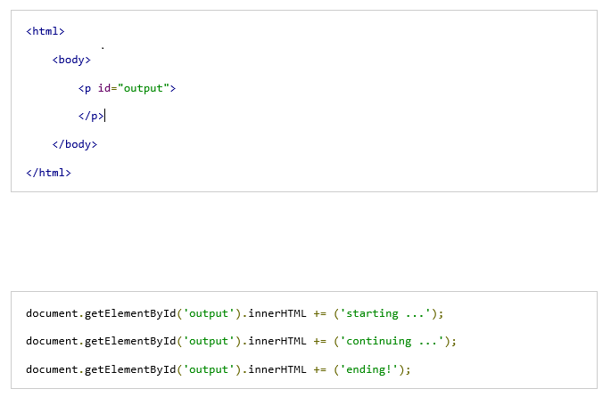

Javascript Callback Function
Functions
- A function is an object
- Objects and variables are placed in functions to make them opperable
- Functions can be placed inside of functions

- Functions work by taking input and return a value using a return statement (ideally a single return statement at the end of the function)
- creates one entry point and one exit point.
- Rather than wait around for a function to finish by returning a value, we can use callbacks to do it at different times.
Callback Function
A JavaScript Callback Function is a function that is passed as a parameter to another JavaScript function, and the callback function is run inside of the function it was passed into
Callback functions are derived from a programming paradigm known as functional programming.
A callback function is essentially a pattern (an established solution to a common problem), and therefore, the use of a callback function is also known as a callback pattern.
- We can pass functions around like variables and return them in functions and use them in other functions.
- Callback Functions are not executed until called upon (hence the name)
- When a function is called depends on your coding like in the sitepoint exercises
Life is so much better with callback functions. Enjoy your new and improved life. w3schools example